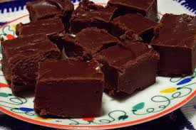

Creamy Chocolate Fudge

Description
This is a easy and tasty recipe for chocolate fudge
It uses easy-to-find ingredients and can be prepared in under 30 minutes.
Ingredients
- 2 cups chocolate chips (milk or dark)
- 1 can (14 oz) sweetened condensed milk
- 2 tablespoons butter
- 1 teaspoon vanilla extract
- A pinch of salt (optional)
Steps
- Line a small square pan with parchment paper.
- In a saucepan over low heat, add the chocolate chips, condensed milk, and butter.
- Stir continuously until everything melts and becomes smooth.
- Remove from heat and mix in the vanilla extract and salt.
- Pour the mixture into the prepared pan and spread evenly.
- Refrigerate for 2–3 hours until firm.
- Cut into small squares and enjoy.
More Recipes